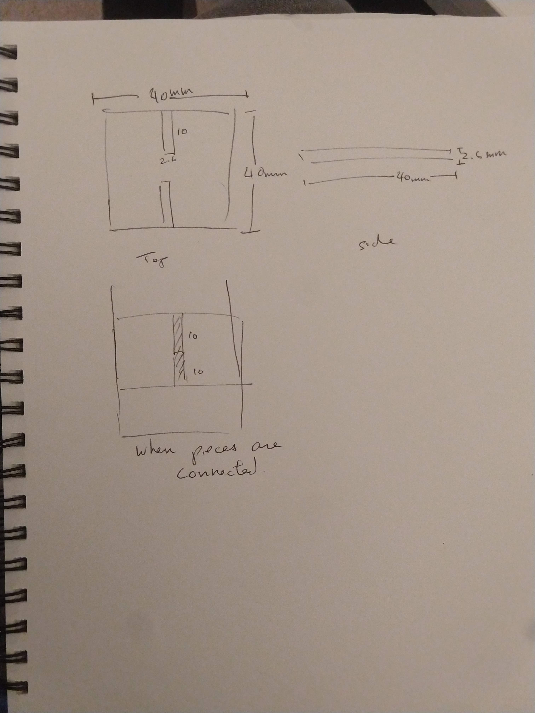
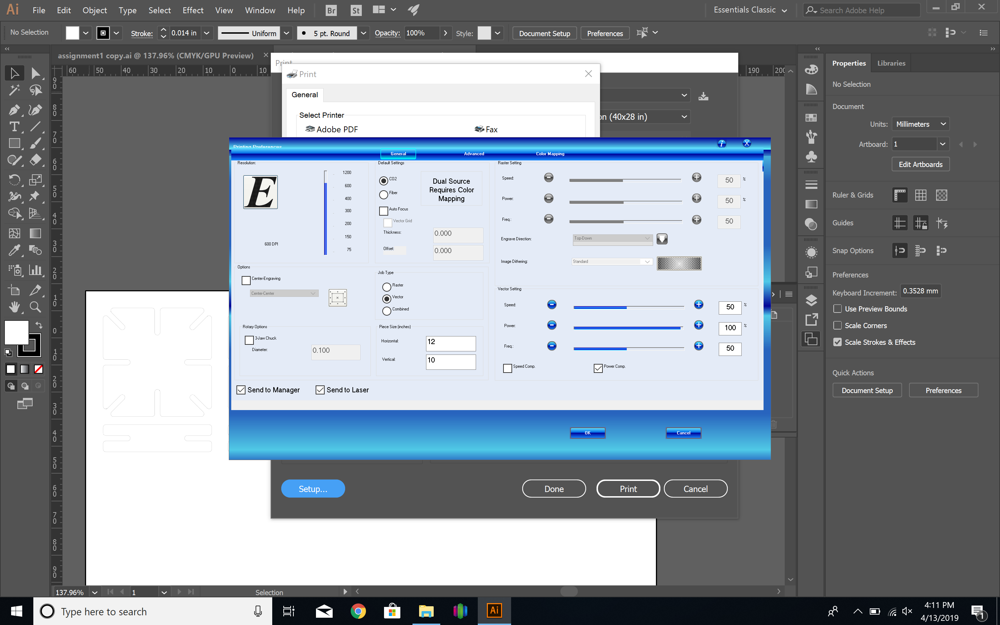
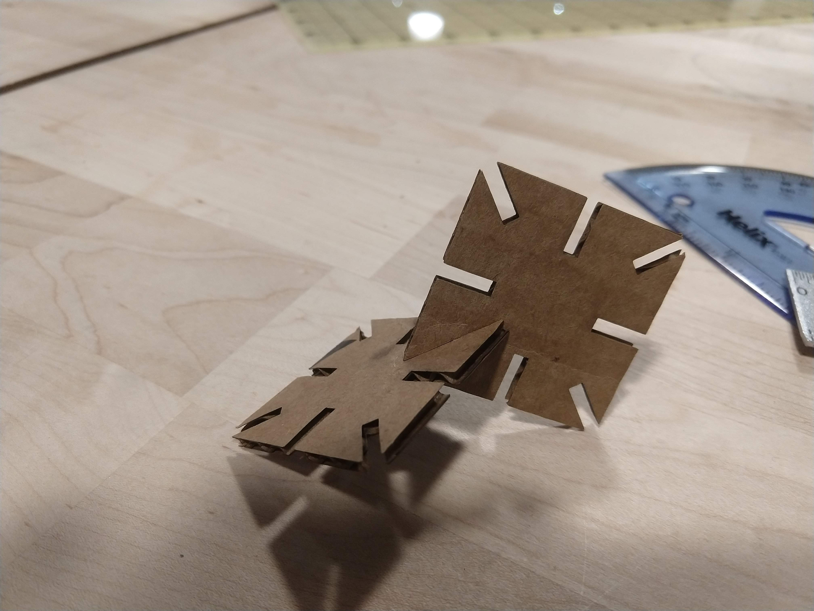
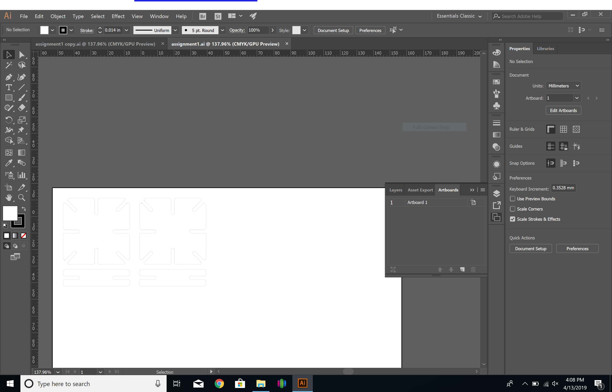
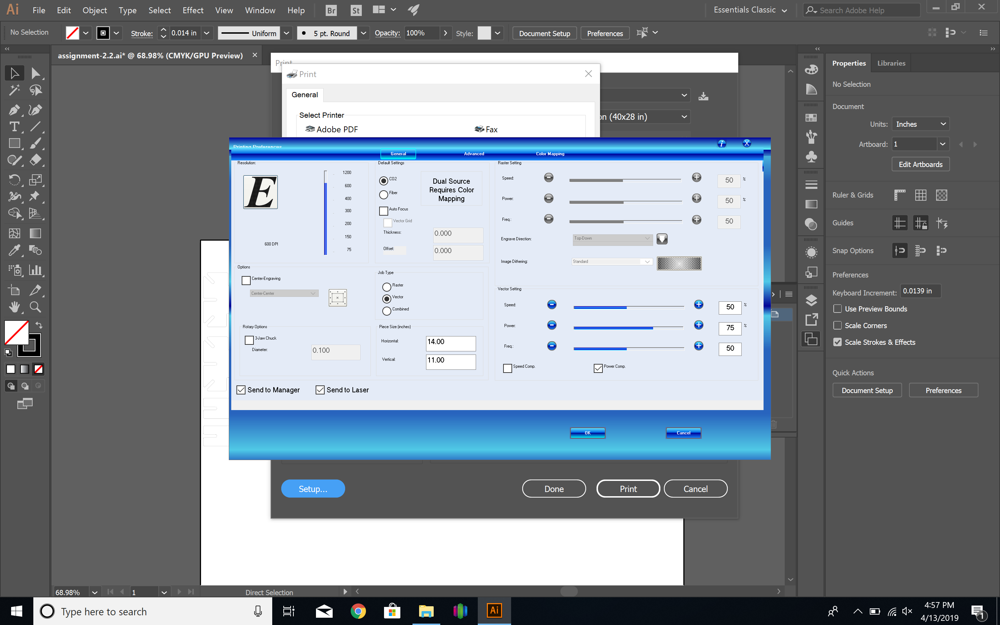
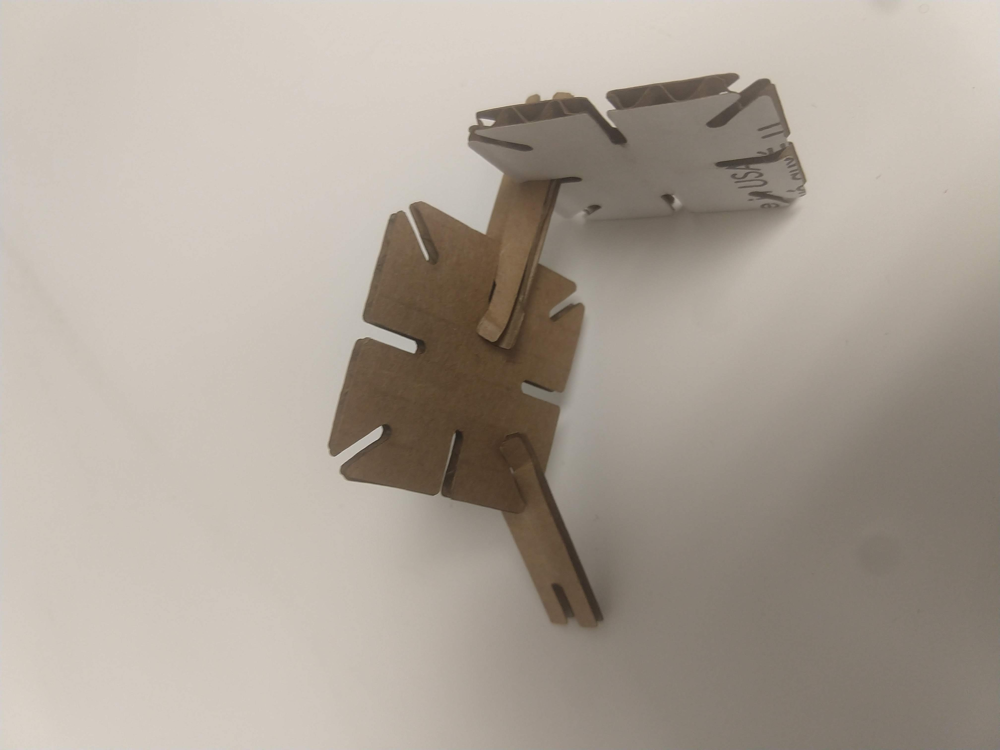
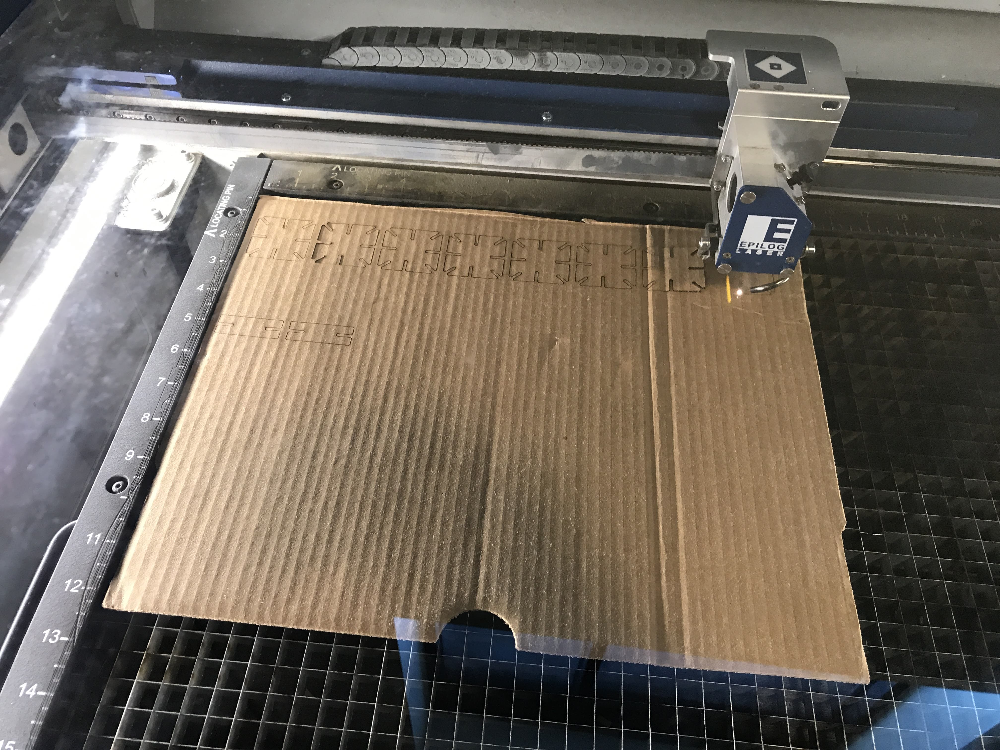
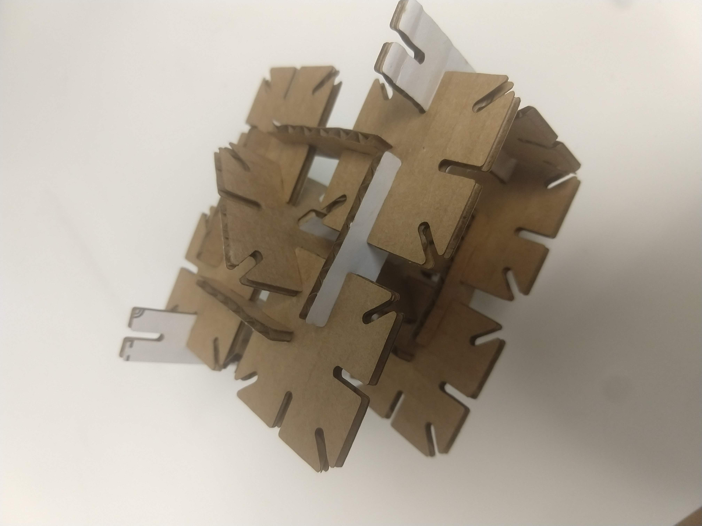

I used the laser cutter to cut out some pieces from cardboard that I could then assemble into 3D shapes.
I started by sketching out the basic shape for my main construction piece. I decided on a square that’s 40 mm x 40 mm. I made notches in the cardboard that was 10 mm deep so that there’s enough friction to hold the pieces together without any glue. Knowing that the thickness of the cardboard was 2.6 mm, I initially made the width of the notches to be 10 mm.

For variety, I also made rectangular connector pieces that were 15 mm x 40 mm, also with 2.6 mm x 10 mm notches at the sides.
Using Illustrator to create the shape to print out, I created 2 sample shapes so that they can be test fitted together. On the Epilog Engraver laser cutter, the shapes were printed using the following settings configured within the laser cutter’s print driver: 50% speed, 100% power, and 50% frequency. The size of the cardboard was also configured into the print driver dialog.

Here was the initial prototype.

I found that when setting the width of the notches on the square to be the same as the width of the cardboard, the fitting was too loose. As the cardboard has a little bit of give, the width of the notches needed to be slightly smaller than the width so that there’s enough friction to hold the pieces together.
Additionally, printing with 100% power resulted in the edges of the cardboard being burnt. The cardboard used had a painted white side that clearly showed scorched marks.
Based on the first trial, I adjusted the width of the notches to be 2 mm so that there will be more friction to hold the pieces together. Based on feedback, the corners were rounded to make it easier to fit the pieces together.

I reduced the power of the laser cutter head from within the print driver to 50% speed, 75% power, and 50% frequency.

The notches were too narrow this time and the pieces didn’t slide in nicely. You can see the cardboard was being bent due to stress in the picture below. However, the laser didn’t scorch the cardboard with the reduced power setting.

The notches were increased to be 2.2 mm x 10 mm while keeping the same printer settings as the previous attempt.

This seemed to produce an acceptable result where the pieces slide in nicely with each other but still maintained a good hold. A 3D object could be easily assembled with these pieces.

I learned that for best results, it’s important to set the power on the laser to the minimum setting that will still cut the material but not burn it. Additionally, accounting for the width of the cardboard was tricky and required numerous attempts to get an acceptable result.
Much appreciation to Leo (@LeoSalemann) and José (@malvenko) for helping me with the laser cutter. Also thanks to Joshua (@JoshuaV) for his tip on rounding the corners to make things fit together nicely.